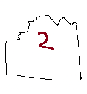
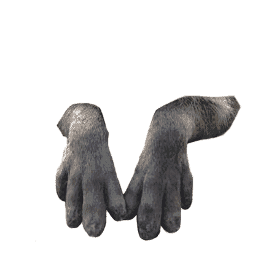

<body>
    <svg id="hotspot-map"
         version="1.1" xmlns="http://www.w3.org/2000/svg" xmlns:xlink="http://www.w3.org/1999/xlink"
         viewBox="0 0 1000 1000" >
        <image preserveAspectRatio="none" id="background-img" xlink:href="images/intro_love_stump.png"></image>
    </svg>

    <a id="brochure-piece2" class="hotspot centered nosparkle cursor-pick-up" href="#" onclick="pickUpBrochure(2)" style="left: 39%; top: 28%; width: 10%; height: 13%;" >

        
    </a>

    
    


    <script type="module">

      const mainElm = document.getElementById("main");
      const brochureElm = document.getElementById("brochure-piece2");
      const yourHandElm = document.getElementById("your-hand");
      const capyHandElm = document.getElementById("capy-hand");

      // const x = brochureElm.style.left;
      // const y = brochureElm.style.top;
      const rect = brochureElm.getBoundingClientRect();
      const brochureX = rect.left;
      const brochureY = rect.top;
      console.log(brochureX);

      function distanceSq(x1, y1, x2, y2) {
	return Math.pow(x2 - x1, 2) + Math.pow(y2 - y1, 2);

      }

    
      function onMouseMove(e) {
	      // console.log(e.target);
	      // if (e.target.id == "your-hand") {
	      //   return;
	      // }
	      
	      const mouseX = e.offsetX;
	      const mouseY = e.offsetY;

	      const distSqToBrochure = distanceSq(brochureX, 
	      				    brochureY,
	      				    mouseX,
	      				    mouseY);

	      //console.log(distSqToBrochure);

	      // we're close enough to brochure, initiate hands
	      if (distSqToBrochure < 50000) {

	        console.log("we close");
	        // position and show our hand
	        document.body.style.cursor = "none";
	        yourHandElm.style.display = "block";
	        yourHandElm.style.left = mouseX + 'px';
	        yourHandElm.style.top = mouseY + 'px';
	      
	        // position and show capy hand
	        // reflected about brochure position
	        capyHandElm.style.display = "block";
	        const reflectedX = brochureX * 2 - mouseX;
	        const reflectedY = brochureY * 2 - mouseY;
	        capyHandElm.style.left = reflectedX + 'px';
	        capyHandElm.style.top = reflectedY + 'px';

	        if (distanceSq(mouseX, mouseY, 
	      		 reflectedX, reflectedY) < 2000)
	        {
	          console.log("touch!");
	          document.removeEventListener('mousemove', onMouseMove);
	          document.body.style.cursor = "auto";
	          yourHandElm.style.display = "none";
	          capyHandElm.style.display = "none";
	        }
	      } 

	      // turn off hands mode (too far from brochure piece)
	      else {
	       document.body.style.cursor = "auto";
	       yourHandElm.style.display = "none";
	       capyHandElm.style.display = "none";
	      }
      }


	
      document.addEventListener('mousemove', onMouseMove);
      


    </script>
</body>
